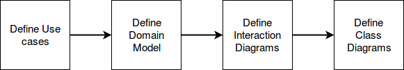
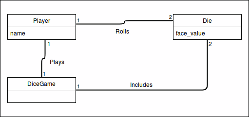
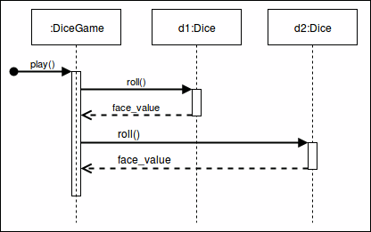
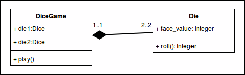

<!doctype html>
<html lang="sv">
<meta charset="utf-8" />
<title>oopython kmom03</title>

<!-- Mithril HTML Slideshow styles -->
<link href="../css/mithril-slideshow.css" rel="stylesheet" />

<!-- Code formatting using highlight.js -->
<link rel="stylesheet" href="../css/default.css">
<link rel="stylesheet" href="../css/tomorrow.css">
<script src="../js/highlight.pack.js"></script>

<!-- Text formatting using Markdown through showdown.js -->
<script src="../js/showdown.min.js"></script>


<!-- Here comes the slides in order -->
<script data-role="slide" data-markdown type="text/html">
#oopython kmom03
###Andreas Arnesson, dbwebb
</script>


<!-- Slide -->
<script data-role="slide" data-markdown type="text/html">
#Agenda

* Vad är UML?
* Sekvensdiagram
* Klassdiagram
* Kritik
* Pythons historia

</script>

<!-- Slide -->
<script data-role="slide" data-markdown type="text/html">
#vad är UML?

* Unified Modelling Language
* Standardiserad (ISO, OMG)
* Diagram struktur och beteende

</script>

<!-- Slide -->
<script data-role="slide" data-markdown type="text/html">
#UML ...

“Owning a hammer doesn’t make one an architect”

</script>

<script data-role="slide" data-markdown type="text/html">
#Objekt Orienterad Analys och Design


</script>

<script data-role="slide" data-markdown type="text/html">
#Domain model

</script>

<script data-role="slide" data-markdown type="text/html">
#Interaction Diagrams


</script>

<script data-role="slide" data-markdown type="text/html">
#Class Diagrams


</script>

<script data-role="slide" data-markdown type="text/html">
#Diagram


</script>

<script data-role="slide" data-markdown type="text/html">
#Sekvensdiagram


</script>

<script data-role="slide" data-markdown type="text/html">
Main success scenario (or basic flow):  
The Customer arrives at a POS checkout with items to purchase.  
The cashier records the identifier for each item. If there is more than
one of the same item, the Cashier can enter the quantity as well.  
The system determines the item price and adds the item information to
the running sales transaction. The description and the price of the current
item are presented.  
On completion of item entry, the Cashier indicates to the POS system 
that item entry is complete.  
The System calculates and presents the sale total.  
The Cashier tells the customer the total.  
The Customer gives a cash payment (“cash tendered”) possibly greater
than the sale total.
</script>

<script data-role="slide" data-markdown type="text/html">
Extensions (or alternative flows):  
If customer didn’t have enough cash, cancel sales transaction.
</script>

<script data-role="slide" data-markdown type="text/html">
#Klassdiagram


</script>


<!-- Slide -->
<script data-role="slide" data-markdown type="text/html">
#Användbarhet av UML

* Beror på hur vi använder det.
* Som en skiss eller dokumentation?
    * Ett mål att sikta mot.

</script>

<!-- Slide -->
<script data-role="slide" data-markdown type="text/html">
#Kritik

* not useful
* too complex
* UML & code in sync
* Kontra automatiserad dokumentation av kod

</script>


<script data-role="slide" data-markdown type="text/html">
#Historia
Varför skapades Python var fick det sitt namn ifrån?
</script>


<!-- include essential js-script -->
<script src="../js/mithril.min.js"></script>
<script src="../js/mithril-slideshow.js"></script>

</html>
